In this example we consider our first moving-boundary Navier-Stokes problem: The flow of a viscous fluid contained in an elliptical ring whose walls perform periodic oscillations.
oomph-lib's Navier-Stokes elements are based on the Arbitrary Lagrangian Eulerian (ALE) form of the Navier-Stokes equations and can therefore be used in moving domain problems. In this example we illustrate their use in Domain - based meshes (first discussed in the example demonstrating the solution of the unsteady heat equation in a moving domain) in which MacroElements are used to update the nodal positions in response to changes in the domain boundary. In subsequent examples, we will discuss alternative, sparse mesh update techniques that are useful in problems with free boundaries and in fluid-structure interaction problems.
We consider the unsteady 2D flow of a Newtonian fluid that is contained in an oscillating elliptical ring whose wall shape is parametrised by the Lagrangian coordinate 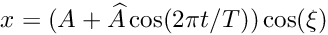 as 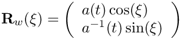 where 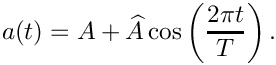 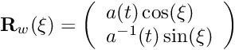 represents the average half-axis of the elliptical ring in the 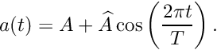-direction, and 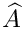 is the amplitude of its periodic variation. The ring has constant cross-sectional area – consistent with the incompressibility of the fluid whose motion is governed by the ALE form of the Navier-Stokes equations, 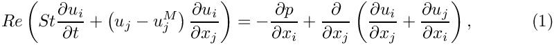 and the continuity equation 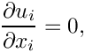 where 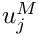 is the mesh velocity. We exploit the symmetry of the problem and solve the equations in the quarter domain
shown in this sketch (for 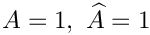 and 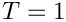), 
Sketch of the computational domain. The fluid is subject to no-slip boundary conditions on the curved wall, 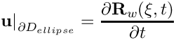 and symmetry conditions on the symmetry boundaries, 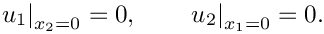 The initial conditions for the velocity are given by 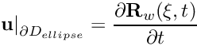 where 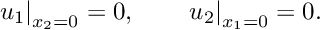 is a given, divergence-free velocity field that satisfies the velocity boundary conditions at 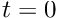. No initial conditions are required for the pressure. |
![\[ D = \left\{(x_1,x_2) \, \bigg| \, x_1\geq0, \, x_2\geq0,\, \left(\frac{x_1}{a(t)}\right)^2 + \big(x_2 \, a(t)\big)^2 \leq 1\right\}, \]](form_9.png)
An exact solution
It is easy to show (by inspection) that the unsteady stagnation point flow
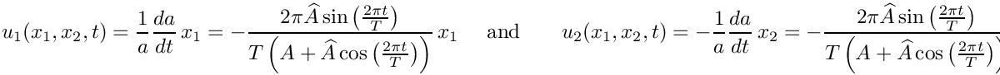
is an exact solution of the above problem as it satisfies the Navier-Stokes equations and the velocity boundary conditions. The pressure is given by
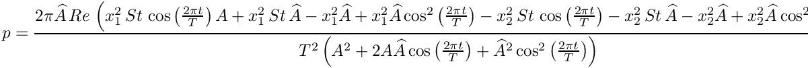
Results
The two figures below show two snapshots of the solution for 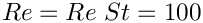 , extracted from an animations of the results computed with Taylor-Hood and Crouzeix-Raviart elements. In both cases, the exact solution was used as the initial condition for the velocities. The figures show "carpet plots" of the two velocity components and the pressure, respectively, and a contour plot of the pressure, superimposed on the moving mesh. The carpet plot of the velocities clearly shows that the flow is of stagnation-point type as the horizontal velocity, 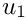 , is a linear function of 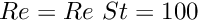 while the vertical velocity,  , is a linear function of 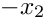.
, is a linear function of 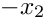.


The moving wall
As usual, we represent the moving wall as a GeomObject and define its shape by implementing the pure virtual function GeomObject::position(...). The arguments to the constructor specify the mean half-axis of the ellipse, , the amplitude of its variations, , and the period of the oscillation,  . We also pass the pointer to a
. We also pass the pointer to a Time object to the constructor and store it in a private data member, to allow the position(...) functions to access the current value of the continuous time.
The global parameters
As in most previous examples, we use a namespace to define and initialise global problem parameters such as the Reynolds and Strouhal numbers:
We also define and initialise the parameters that specify the motion of the domain boundary and specify the exact solution.
The driver code
As in most previous unsteady demo codes, we allow the code to be run in a validation mode (in which we use a coarser mesh and execute fewer timesteps). This mode is selected by specifying an (arbitrary) command line argument that we store in the namespace CommandLineArgs.
We create a DocInfo object to specify the output directory, build the problem with adaptive Crouzeix-Raviart elements and the BDF<2> timestepper and perform the unsteady simulation.
Then we repeat this process for adaptive Taylor-Hood elements.
The problem class
Most of the problem class is a straightforward combination of the problem classes employed in the simulation of the adaptive driven cavity and Rayleigh channel problems, in that the problem combines unsteadiness with spatial adaptivity (though in the present problem the adaptivity is only used to uniformly refine the very coarse base mesh; we refer to another example for the use of full spatial adaptivity in a moving-domain Navier-Stokes problem).
The key new feature in the current problem is the presence of the moving domain which requires updates of
- all nodal positions
- the prescribed velocities on the moving wall via the no-slip condition.
before every timestep. Since the nodal positions of the QuarterCircleSectorMesh are determined via its MacroElement / Domain representation (which updates the nodal position in response to changes in the geometry of the GeomObjects that define its boundaries), the former task may be accomplished by executing the Mesh::node_update() function; the update of the no-slip condition may be performed by calling the function FSI_functions::apply_no_slip_on_moving_wall(Node* node_pt), a helper function, defined in the namespace FSI_functions, which updates the velocity components 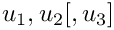 according to the no-slip boundary condition
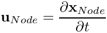
where the time-derivative of the nodal positions is evaluated by the Node's positional timestepper. [Note: The function FSI_functions::apply_no_slip_on_moving_wall(...) assumes that the velocity components are stored in the Node's first 2 [3] values. This is consistent with the storage of the velocity component in all existing Navier-Stokes elements. If you develop your own Navier-Stokes elements and use a different storage scheme you use this function at your own risk.]
Here is the implementation of these tasks:
The remaining functions are similar to those used in our previous Navier-Stokes examples and require no further explanation.
The problem constructor
We start by creating a timestepper of the type specified by the Problem's template parameter and add (a pointer to) it to the Problem's collection of Timesteppers. Recall that this function also creates the Problem's Time object.
Next we create the GeomObject that defines the curvilinear domain boundary and pass it to the Mesh constructor. (Since we will only use adaptivity to refine the mesh uniformly, it is not necessary to define an error estimator.)
Both velocity components on the curvilinear mesh boundary are determined by the no-slip condition and must therefore be pinned,
whereas on the symmetry boundaries only one of the two velocity components is set to zero:
Finally, we pass the pointers to 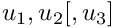, 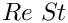 and the global Time object (automatically created by the Problem when the timestepper was passed to it at the beginning of the constructor) to the elements, pin the redundant nodal pressure degrees of freedom (see the discussion of the adaptive driven-cavity problem for more details), pin one pressure degree of freedom, and set up the equation numbering scheme.
Assigning the initial conditions
This function assigns "history values" for the velocities and the nodal positions from the exact solution. It is implemented in exactly the same way as in the solution of the unsteady heat equation in a moving domain. Note that because the domain is moving, the nodal positions must be updated (according to the position of the domain boundary at the relevant previous timestep), before evaluating the exact solution at the nodal position.
Post processing
The function doc_solution(...) is similar to that in the unsteady heat examples and the previous Navier-Stokes examples. We add dummy zones and tecplot geometries to facilitate the post-processing of the results with tecplot.
The timestepping loop
The timestepping loop is extremely straightforward: We choose a timestep and the overall length of the simulation, initialise the timestepper(s) by calling Problem::initialise_dt(...) and assign the initial condition.
Next we set the number of timesteps for a normal run.
We over-write this number and perform a single uniform mesh refinement if the code is run in self-test mode (indicated by a non-zero number of command line arguments),
otherwise we refine the mesh three times and output the initial conditions
Finally we execute the proper timestepping loop and document the solution after every timestep
Comments and Exercises
- Compare the results of the numerical simulation in which 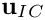 is given by the exact solution (an unsteady stagnation point flow) to that obtained from an "impulsive start" where 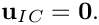 (This is most easily implemented by replacing the call to
set_initial_condition()with a call toProblem::assign_initial_values_impulsive().
Why do we obtain the same velocity with both initial conditions and why does the pressure take a few timesteps (How many exactly? Compare simulations withBDF<4>andBDF<2>timesteppers.) to "catch up" with the exact solution? [Hint: The unsteady stagnation point flow is a potential flow, therefore the viscous terms in the Navier-Stokes equations disappear. See also chapter 3.19 in Volume 2 of Gresho & Sani's wonderful book "Incompressible Flow and the Finite Element Method".]
Source files for this tutorial
- The source files for this tutorial are located in the directory:
demo_drivers/navier_stokes/osc_ellipse/ - The driver code is:
demo_drivers/navier_stokes/osc_ellipse/osc_quarter_ellipse.cc
PDF file
A pdf version of this document is available.